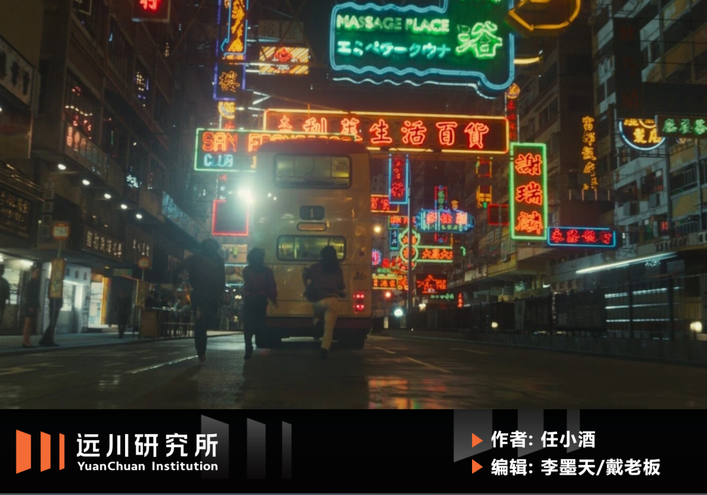
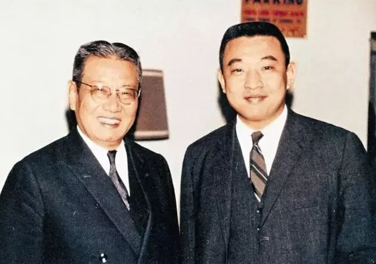
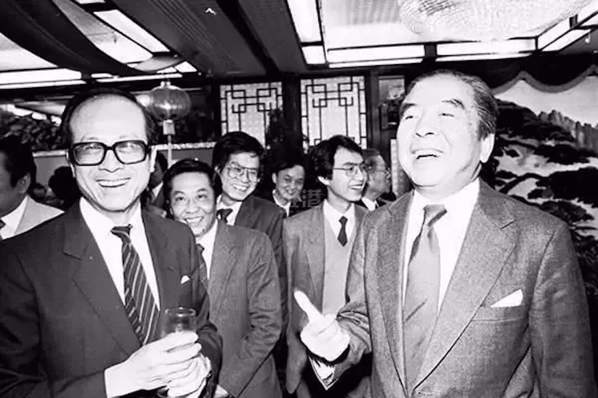
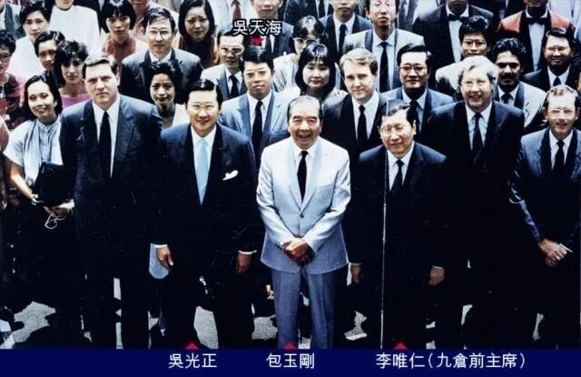
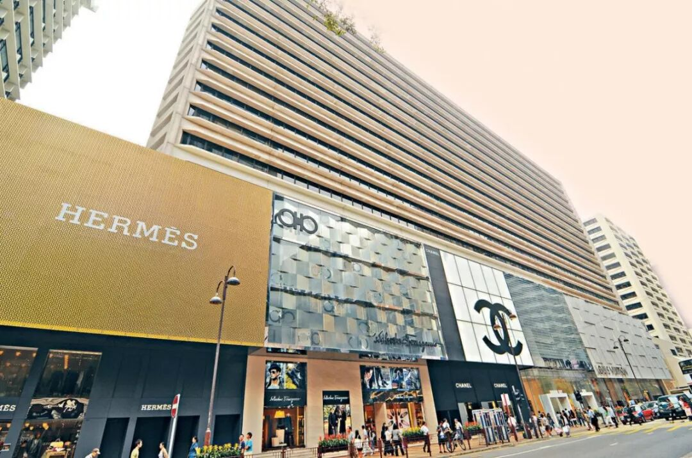
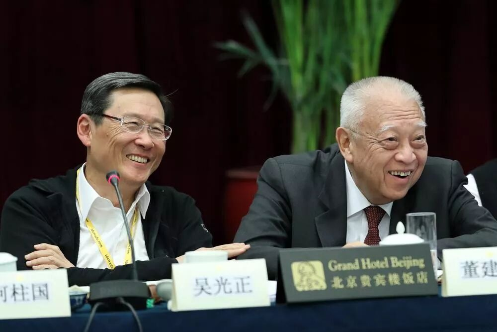
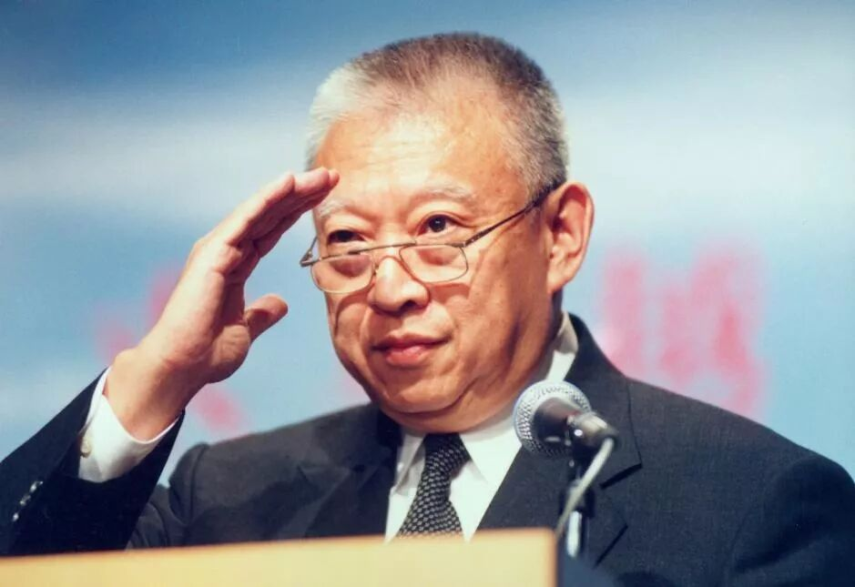

9月8日晚，董建华先生在香港辞世，享年89岁。
我们在2019年发布过一篇文章，借“富豪家族接班”这个话题，回顾过董建华先生在香港的过往。
董建华以香港首任特首的身份为人熟知，但他的家族其实发迹于航运业。1970年代，航运业风生水起，包玉刚和董浩云是最显赫的两大家族，两人在航运业缠斗多年，延续到后辈。
此后，包玉刚的女婿吴光正投身地产，董浩云之子董建华转向政界。1995年，命运中的宿敌又在香港首任特首竞选中对决，这次是董建华赢了。
成为特首的董建华大展拳脚，推行了一系列施政方针，以解决住房问题的“八万五”计划，和推动香港互联网产业的“数码港”计划为最知名。它们都令人憧憬，都无疾而终。人才、住房、科技的良性循环，成为海市蜃楼。
正确的事情不会因为正确变得容易，董建华留下了一份复杂的政治遗产，让后人可以从中勾画出一个野心勃勃的时代，以及故事的另一种结局。缅怀董建华先生。
以下是正文：
在香港，葬礼是门政治。
2016年郑裕彤去世，全香港富豪名流悉数到场，扶灵名单也要精挑细选：两任特首董建华和梁振英排在最前面，后面是中联办主任张晓明和澳门行政长官崔世安，接着才是李嘉诚和李兆基。一代情圣刘銮雄都排不上号，只能拄着拐杖远远看着老情人李嘉欣挽着许晋亨，兀自惆怅。
两年后，新鸿基掌舵人郭炳湘离世，参加吊唁的多以豪门二代为主：李嘉诚之子李泽钜，霍英东之子霍震霆，黄廷方之子黄荣祥和李兆基之子李家诚，政界人物则是致函唁电的多，出席葬礼的少；而2个月后李嘉欣公公许世勋去世，出席的富豪就只有95岁的马来西亚糖王郭鹤年了。
政商通吃的老一辈富豪，才能享受顶级的葬礼待遇。1982年，一代船王董浩云去世，三千多名政商人士将位于北角英皇道的香港殡仪馆堵得水泄不通。扶灵的12人有邵氏公司董事长邵逸夫、汇丰银行董事长沈弼、摩纳哥王子雷尼尔，美国总统里根和台湾领导人蒋经国也特地致吊唁电话。
但出殡当天第一个赶到灵堂，却是另一位浙江籍船王包玉刚，他在向董浩云的灵柩鞠完躬之后，李嘉诚和港英总督麦理浩（Crawford MacLehose）才步入现场。英雄惜英雄，包玉刚跟董浩云为了争夺全球航运老大的位置，缠斗一辈子，如今老对手西去，过往恩怨也悄然谢幕。
1991年，包玉刚也驾鹤西去，葬礼规格空前绝后。走在8人扶灵队伍最前面的，是外交部副部长周南和撒切尔夫人的丈夫丹尼斯爵士，紧跟的是李嘉诚和邵逸夫。几乎所有G20国家领导人均送来花圈，邓小平更是以“生前友好”的名义，派女儿邓榕和女婿贺平专程赴港，出席葬礼。
豪门葬礼的另一面，是商业帝国的接班。董浩云去世后，旗下船运帝国传承给了两个儿子董建华和董建成；而包玉刚经过一番精心设计，将庞大的商业帝国分拆成四部分，传给了四个女儿和女婿，其中最重要的地产部分（会德丰和九龙仓），交到了二女儿包陪荣和女婿吴光正的手上。
从1982年董浩云去世，到1991年包玉刚去世，香港在不到10年的时间里风云变幻。董浩云葬礼结束的5个月后，撒切尔夫人抵港，收到了总设计师“关于主权问题，没有回转余地”的回答。随后的几年里，吴光正协助包玉刚弃船登陆，董建华弃商从政，两个家族开始走向不同的方向。
在两个家族的不同轨迹里，一些变化发生了，一些伏笔埋下了，历史的暗门裂变出两个香港：一个是未曾实现的香港，一个是走向悲伤的香港。
01. 双峰：船王和他们的接班人们
包玉刚和董浩云的缠斗，要追溯到上个世纪40年代末：两人分别于1949年和1948年来到香港，前者来自宁波镇海，后者来自舟山定海县。
1955年，董浩云借着朝鲜战争狠赚了一笔，在行业内声望日隆，而从上海银行副行长辞职的包玉刚，也看中了香港作为世界贸易港的潜力，决定转行。对航运一无所知的包玉刚登门求董浩云，后者多少有些前辈的架子，呛了包玉刚一句：“你也想搞航运？胆子真够大的！”
董浩云的轻蔑不无道理。航运是一个典型的重资产行业，”金融+产业”联动的高杠杆模式，既需要利用自有资金加杠杆借贷，又需要与各国政府之间保持良好的政商关系，保证资金来源。因此想要在航运竞争中盈利，就必须背上高负债，还得有天时地利配合，稍有不慎便会倾家荡产。
谋事在人，成事在天，老天爷给了包玉刚发迹的机会。1956年中东战争爆发，埃及封锁苏伊士运河，海上运输必须绕道好望角，航运业大发横财。到了60年代，越南战争爆发，美军急需船只帮忙做后勤补给，董浩云借战争猛虎添翼，包玉刚也在其间迅速崛起，成为香港的富豪之一。
航运这门生意，吨位是一切的基础，手里的船越多，赚的钱就越多。董浩云早年财力薄弱，常常收购旧船，发迹后则手笔豪放，热衷建造巨轮。越战期间，美国半卖半送给了董浩云12艘船，又赶上日本以低息贷款推动造船业，他趁势订造一艘16000吨的“东方樱花”号，一时风光无两。
相比之下，包玉刚的船数量少，船龄高，吨位小。但他在经营模式上搞创新：把船租给别人，自己只收租金。战争期间，航运需求急速扩张，货运公司付出远高于平时的租金租船，发了横财的包玉刚火速添置了7条货船。喜欢从买船到运输一条龙包办的董浩云对此不屑：“他那算什么船东？”
出身银行的包玉刚深谙航运业的金融属性，找到了汇丰银行这座靠山，并于1971年加入汇丰董事会。凭借着汇丰的大笔贷款，包玉刚的海上王国蒸蒸日上，在船运吨位上逐渐能跟董浩云平起平坐。董浩云也没闲着，1973年旗下东方海外在香港上市，募集1.2亿港元几乎全被用来订购新船。
对于两人的竞争，董浩云特别在乎。东方海外上市那年，美国《新闻周刊》发文，将包玉刚与世界级船王奥纳西斯相比，称他为“东方奥纳西斯”，无疑是巴掌扇在董浩云脸上。但更打脸的还在后面：1977年，一家西方船运经纪公司给船王们排了个座次，包玉刚荣膺头把交椅，董浩云只排在第七。
嗜船如命的董浩云坐不住了，写了一封《致编辑的信》寄给这些媒体，直言其计算方法有问题：他包玉刚的船有一半股权在汇丰手里，我东方海外的船可是都姓董！
董浩云嗜船如命的习性，香港人尽皆知：每每有新船下水，他就要精心设计三天的庆祝节目，借机造大声势，提高自己的知名度。一次董浩云为了捧红一个女钢琴家，就专门包下了伦敦皇家亚尔巴音乐厅，还请来英国皇家管弦乐队来伴奏，把飞机票送到每位客人朋友手中，确保他们到场。
董浩云的计较让总想搞大新闻的香港媒体嗅到了荤腥，开始疯狂造势：谁才是真正的船王？包董之争，一时间闹得沸沸扬扬。
除了竞争吨位，董浩云还在接班人问题上跟包玉刚暗中较劲。在这方面董浩云先拔头筹，两个儿子成绩优异，尤其是董建华，董浩云很早就开始针对性培养，儿子毕业后安排去美国通用汽车基层打工，他跟董建华讲道[3]：“你不要想到自己有依靠，你必须自己主动去找苦吃，磨练意志。”

董浩云和长子董建华，1969年
包玉刚膝下无子，只有四个女儿，但女婿都很厉害，尤其是二女婿吴光正。他于1951年随父母从上海迁居香港，中学毕业后前往美国俄亥俄州辛辛那提大学选攻读建筑学专业，后来又转到哥伦比亚大学。在哥大，吴光正身兼游泳健将与学校活跃分子，获得了包玉刚次女包陪容的芳心。
就在两家生意蒸蒸日上之际，一场波及全球航运业的萧条正在酝酿：一方面，经过二十年的扩张后，80年代初船运业运量已经明显过剩；另一方面，70年代的两次石油危机让依赖石油运输的船运业遭到当头闷棍，油船的需求每年肉眼可见的下滑，船租暴跌，港口停满了没活干的油船。
在这个黑云压城的时刻，董浩云和包玉刚还战斗在一线，培养的接班人也都年富力强，紧随左右，在这场前所未有的考验中，两家会交出怎样的答卷呢？
02. 诀别：逆势扩张和弃船登陆
作为全球顶级航运企业家，董浩云和包玉刚对于行业低潮都早有预判，但两个人的性格，决定了他们选择了两条截然不同的道路。
信奉行业周期论的董浩云，坚信船价暴跌、行业不景气时，才是抄底最好时机，而“全球第一船王”的心结，更是将他这种逆势扩张的欲望调动到了极致；而包玉刚则不同，银行的从业经历让他对风险尤为敏感，见风头不好就果断卖船，偿还公司债务，降低风险敞口。
得知包玉刚正在卖船，一心想做世界第一的董浩云自然不会放过机会，一边清理服役已久的小船，一边大肆负债，购进大船。包玉刚收缩业务时，董浩云还在日本订造了当时世界上第一大油轮“海上巨人”号。董浩云并非不知道萧条的杀伤力，但他估计低谷只会持续几年，非常乐观。
当董浩云的东方海外正朝着世界船王发起最后的冲击，包玉刚却做了一个决定：弃船登陆，转型房地产。
要挤进日益激烈的香港房地产市场，自己从头开始做显然是不现实的，包玉刚盯上了隶属怡和洋行的地产公司九龙仓。彼时的九龙仓是香港最大的货运港，不单单有深水码头、露天货场、货运仓库，还包含了酒店、大厦、有轨电车等产业。倘若把这块地合理开发，前景无量。
李嘉诚对九龙仓也觊觎已久，暗地里先抢下了2000万股份，但进一步收购却被怡和洋行阻止。包玉刚深知机会难得，于是在1978年8月的一个下午约见李嘉诚，后者向包玉刚提供了1977年九龙仓财产报表和物业资料，一同参会的吴光正当晚研究了这些材料，熬夜拟定了收购计划。

包玉刚和李嘉诚谈笑风生
翌日，吴光正就见证了两位商界高人的秘密握手：包玉刚收购李嘉诚送上门的2000万股九龙仓股票。如此，加上原本持有股票，包玉刚不动声色控制了30%的股权，大大超过了怡和洋行，并加入了九龙仓董事会。怡和洋行也不是善茬，为了保证控制权，他们开始大规模反购股份。
双方的拉锯持续了两年，一直到1980年6月，怡和洋行趁包玉刚前往巴黎参与会议期间，发动突然袭击，采用换股打法，在6月20日上午投放大量报纸广告，以比市价高30%的价格收购散户手中持有的九龙仓股票，英国人认准了包玉刚无法在周末两天筹集足够多的钱，用以反制怡和。
身在香港的吴光正得到消息，马上联系包玉刚，建议其去找包家的老朋友汇丰银行借钱。随后，包玉刚订了一张飞瑞士的机票，又暗地里买了回香港的头等舱，一旦筹集够弹药就马上返回香港。而吴光正则在香港联络媒体，安排记者发布会，等着包玉刚回来，就开始散播消息。
记者招待会上，突然现身的包玉刚宣布，自己拿到了汇丰银行的22亿港元贷款保证，并以105元港币的股价收购2000万股，比怡和的收购价还要高，九龙仓大小股东狂潮般把股票卖给包玉刚，怡和洋行见大势已去，便将九仓股1000多万股也甩给包玉刚，套现七亿港币离去。
1980年6月25日，九龙仓之战落幕，包玉刚弃船登陆成功，吴光正则经此一役顺利当上了太子。

包玉刚和吴光正，1980年
在包玉刚成功上岸的同时，董浩云也到达人生巅峰，拥有各类船舶149艘，总吨位达到1200万吨，终于把“世界第一船王”的桂冠戴到头上。1982年，董浩云的第150艘船“宪章号”在台湾下水在即，董浩云请来了摩纳哥王子夫妇参加4月17日的下水礼：这是船王的加冕礼。
根据日程安排，王子夫妇4月14日抵达香港，有人提出日期两个“4”撞到一起不吉利，但董浩云置之不理。然而坊间传言当时的港英政府出于政治上的考虑，不让董浩云去机场迎接。董浩云认为是莫大的侮辱，当晚心脏病发，连夜送医抢救，次日凌晨抢救无效去世，享年71岁。
世事难料，原本盛大的船王加冕礼却成了董浩云的葬礼。船王的遗产只有一间九龙塘的房子、东方海外公司百亿港币的负债，和区区250美元现金[6]，恰逢航运业运量过剩叠加石油危机带来的需求萎缩，全球各大港口停满了没活干的货轮，东方海外业绩暴跌，负债高达14亿美元。
包玉刚和董浩云三十年的商战戛然而止。在葬礼上，对着灵柩鞠躬的包玉刚心有戚戚然：受全球经济衰退影响，香港楼市长期萎靡不振，付出巨大代价拿下九龙仓，到底算抄底还是站在半山腰上，包玉刚心里也没底。在各自的赌局上，两个船王都押上了自己全部的身家。
历史没让包玉刚等太久，答案出现在1984年。
03. 冰火：两种接班，两种模式
1984年9月27日，《中英联合声明》草案签署，为了防止英国在回归前超售土地，草案要求回归前每年批地不超过50公顷。
是年年底，受到声明中土地租用制度及限制出让的条例影响，沉寂多年的香港地产开始复苏，楼价、租金应声上扬，四大家族频频出手抄底香港地产，报纸每日围绕着李嘉诚、郑裕彤等又拍下新高价地段这类新闻。而这一年，东方海外却陷入了史无前例的船运灾难中，董建华举步维艰。
董浩云去世的第二年，东方海外负债高达70亿港币，到了1984年，总亏损高达9.7亿港币。航运高负债、快周转，令往日熙熙攘攘的港口码头成了门可罗雀的船只坟场，冲击远比董建华想象得严重得多。到1985年，东方海外的负债和奥地利整个国家的国债近乎一样多[4]。
每天面对来自全世界银行和债权人的追债，一睁眼想到的便是随时要破产的公司，有时候连续20个小时处理债主和律师的电话，母亲又在这时查出肺癌，一次，董建华在最后一次赶去参加债权人会议前，一度想要自戕，甚至给朋友打电话[5]：“如果我死了，请你照顾我的家人。”
向董家雪中送炭的，是汇丰银行，他们愿意提供一亿美元备用信贷，其中的5000万，来自大陆的中国银行。第二年，霍英东突然伸出援手，宣布向东方海外注资约12亿港币，这针强心剂给了董建华喘息的机会，帮助东方海外在1991年扭亏。有坊间传言，霍英东的钱来自北京[6]。
在董建华苦心支撑的同时，包家却正在享受地产的胜利果实，毫无疑问，包玉刚已经拿到了通往下个时代的门票。
拿下九龙仓的第二年，包玉刚决定把收购来的尖沙咀九龙货舱推平，建成黄金地段商场，命名为“海港城”。吴光正则接手旧电车厂的改造工作，直接将厂房推平，推平效仿纽约时代广场建起了“铜锣湾时代广场”。在这场席卷全球的航运业大萧条中，包家顺利抽身，身价无损。

坐落香港尖沙咀的海港城，2012年
《船王遗恨》中曾写道：“董浩云晚年好大喜功，会祸延后代”，不想一语成谶；世人则感慨包玉刚老谋深算，在危机前夕全身而退，留下了一座香港地标、一座全球销售额稳居第一的商场，为后人铺好了路。包家拥有这块地999年的土地使用权，单是租金，一年就净赚160亿元。
终于，香港的“收税式实业”模式出现了，日后它的效仿者，将有如过江之鲫。
包玉刚于1991年去世，葬礼地点跟董浩云一样，选在了北角英皇道的香港殡仪馆。在西式铜制灵柩里，他身穿白衬衫，套燕尾西装，打灰白色领带，身上盖着一床红色的陀螺经被，上面绣着金钱经文，灵堂则摆满了无数商贾政要的花圈和挽联，生前荣华富贵，身后尽享尊崇。
两代船王前后撒手人寰，但包家和董家的故事仍未结束，他们下一场交锋，会是在1997年，那个无与伦比的1997年。
04. 暗战：那些钱解决不了的事情
1993年，吴光正就开始刻意与商界保持距离，淡化他商人的形象，频频出席政界会议。
敏感者开始察觉出这背后的谋划，尤其是吴光正后来辞去九龙仓主席的职位，“官方”给出的理由是吴光正希望能腾出更多时间从事社会事务。有人统计，吴光正辞去九龙仓主席，以及后来辞去会德丰主席两个职务后，可能失去共计至少5000万股份认购权，损失不可谓不大。
1997年回归在即，第一任特首的名字，显然会被写进史册。当时的主流舆论是反对“商人治港”，李嘉诚等巨富就被排除在外，北京的老朋友霍英东也说自己年事已高，而辞职的吴光正扭头就当了香港医药管理局主席，与商人身份彻底撇清了关系，特首之路昭然若揭。
1996年9月，吴光正正式发表声明，角逐特首一职，成为第一个表态参选的候选人。而他的最大对手，则是把东方海外一步步拉出泥潭的董建华。当时，继承包玉刚衣钵的吴氏家族坐拥180多亿的身家，董家的财产刚刚跨过15亿门槛，论起宣传造势，两人显然不可同日而语。
但选特首这件事，比拼的从来都不只是财力。
1989年，董建华为继续父亲创办海上大学的理想，将一艘邮轮改装后命名为“宇宙学府”。当年三月，“宇宙学府”首航来到上海，时任市委书记与市长亲自接待。这是董建华离开上海以后第一次回到内地，也是第一次接触高层。自此之后，东方海外在大陆的投资项目屡屡增加。
七年之后，董建华决议竞逐特首，当年接待他的上海官员，办公地点已经搬到了北京城。
1995年底，中央来人会见李嘉诚、邵逸夫等香港名流，探讨关于行政长官候选人问题。在这场深圳会晤后不到48个小时，李嘉诚便对媒体公开了自己对未来行政长官的两点建议：一是熟悉经济，了解商界运作；二是人品要好，正直不阴险。
不熟悉北京风格发言的香港媒体好一番揣测，最终还是落到了董吴两人的竞争上，把特首选举渲染成父辈们海上交锋的接力战。后来，在香港中华总商会宴会上，身份特殊的霍英东面对媒体发问，直截了当地回答：“我早已在心目中认为他（董）是合适地行政长官”[4]。
霍英东的话自然分量十足，毕竟同样是葬礼，郑裕彤的棺材上盖着白色素花，包玉刚的棺材上盖着陀螺经被，霍英东的棺材上盖的是五星红旗。
那年12月11日，香港各界、各阶层四百位推选委员会委员齐聚在香港会议展览中心，即将投票选举出香港特别行政区第一任行政长官人选。就连散步的老人把收音机调到最大，家里吃午饭的人都举着碗坐在电视前，商场里的电视机都统一调到了一个频道，逛街的男男女女驻足等待。
12点15分，点票工作全部结束，其中董建华获得了320票，吴光正36票。船王后人的又一次对垒，董建华赢得毫无悬念。
落败的吴光正并没有拂袖离去，而是积极参与香港特区第一届政府，被委任以医院管理局主席职务，之后又成为了香港贸易发展局主席。他和董建华的蜜月期维持了将近四年，2002年，吴光正重新回归九龙仓会德丰，拾起公司主席一职，并且表示再也不会竞选特首。

吴光正和董建华，2012年
从表面上看，董家扳回一局，但从更大的范围看，包玉刚和吴光正创造的“降维式接班”，像野火一般蔓延开来，成为香港财阀们的主流操作。
05. 降维：怎样才能富过三代，五代，十代？
所谓降维接班，用大白话说就是：主动调整自己的商业帝国经营方向，降低经营难度，把企业变成“傻子都能经营好”，再交给第二代。
包玉刚的“弃船登陆”，本质上就是将商业帝国从经营难度极高的船运业摆脱出来，转型经营难度大幅降低的地产，之后更是进入经营简单的“收租型物业”。这种转型，既避免了肱骨老臣对接班人的腹诽和阻碍，又能让二代获得稳健的收益。此举获得香港富豪的纷纷效仿。
如果你仔细看，会发现香港的电力是嘉道理家族和李嘉诚的，煤气是李兆基的，超市是李嘉诚和怡和集团的，公共交通是李兆基和郑裕彤的，本质上，这都是“收税制商业”。
上世纪50年代起，四大家族通过房地产积累巨大财富，并逐步控制了香港的物流、金融、电力、码头、电信等所有具备垄断特性的产业，进而“坐地收租”。包玉刚当初的精明也体现在这里，除了九龙仓，吴光正还陆续控制了香港的有限宽带、天星小轮、九龙仓电讯、海港企业等一系列公司。
1997年，董建华提出了“八万五”计划（每年要兴建8.5万套住宅，10年内香港有7成家庭都会有自己的房子），触动了已经根植香港半世纪的“收税模式”的利益。加之“八万五”撞在了金融危机的前夜，就连香港居民也对董建华嗤之以鼻，把他当作房价暴跌的幕后元凶。

董建华任特首时期，1998
1999年，董建华推出他另外一个创举政策：数码港计划，旨在绕开本地的富商，发展互联网科技。数码港计划的支持者是李嘉诚小儿子李泽楷，他带着十五家国际科技龙头企业的进驻意向书，找到董建华。政府对李泽楷的盈科信任有加，数码港计划决定不招标，直接采用。
可命运再次跟香港开了个玩笑，数码港计划颁布的第二年，互联网泡沫在美国破裂，尽管园区勉强落成，但只有两家科技公司进驻，且多为销售、市场等部门，所谓的研发中心，丝毫不见踪影。数码港回到了香港的老路：圈地皮卖豪宅，自然又是赚得盆满钵满。
此后，董建华又提出“硅港”计划，意图打造工业基地。结果香港人以炒地皮为由，赶走了竞标建厂的张汝京。后来张汝京到上海张江创办了中芯国际。后来的“中药港”计划，董建华希望利用完善的科研体系，以及香港高素质科研人才，搞出香港新机遇，但最后又是一场竹篮打水。
在董建华在位的97到05年，这三次机会摆在香港面前，它却未能好好珍惜。“金融的暴利成就了香港，也惯坏了香港。资本的短视和逐利，让香港错过了最好的10年。”[8]
家族们的事业却蒸蒸日上，郑裕彤家族在广州建起530米第一高楼、武汉和天津的周大福中心也指日可待；新鸿基的郭家兄弟，除了每年150多亿的广场租金，还有九龙巴士和富联国际。李嘉诚技高一筹，直接跑去英国收租：电信、港口、管道、天然气，甚至连供水都没有放过。
若是要让家族永远衣食无忧，显然没有比“收税”更好的方法。
2005年3月10日，董建华宣布提前两年离任，跟他一起离开的，是那个未曾实现的香港。海港城依然风光，太平山依然快活，城还是李家的城，港还是包家的港。
06. 尾声：从如日中天，到走向悲伤
2015年，69岁的吴光正宣布正式退休，36岁的儿子吴宗权接过数千亿家产，开始躺着收钱。仅两大广场每年收租就可达160亿利润，更不需要提九龙仓还持有的其他四大物业广场。两年后，董建华的东方海外作价338亿出售，船王的传奇就此谢幕，而这338亿的钱，也不过是海港城两年的租金。
这并不仅仅是两个家族的分野，是香港两条路径也就此分岔：那个未曾实现的香港，已经被人遗忘；那个如日中天的香港，慢慢走向了悲伤。
现任特首林郑月娥曾在施政报告里面曾写到：香港楼价高、租金贵，形成巨大的生活压力，是严峻的民生问题：
“不少人的目标就是尽量赚钱买楼供楼，青年人选科和择业都要向钱看。住的问题也是香港最严重的安全隐患，不少家庭走投无路，甚至要住在工厂大厦内的劏房。”
一切仿佛突如其来，一切又早有答案。
全文完，感谢您的耐心阅读。
参考资料
[1] 世界船王——包玉刚传，广东人民出版社出版，1995
[2] 香港商战风云录，广州出版社，1996
[3] 富豪接班人，北方文艺出版社，2005
[4] 董建华家族，广州出版社，1996
[5] 董建华担任香港特首七年，南方周末，2005
[6] 一代船王董建华，中华工商联合出版社，1996
[7] 地产霸权，中国人民出版社，2005
[8] 缓缓沉默的“香港巨轮”，奏响一曲悲歌，2017
作者：任小酒
编辑：李墨天/戴老板
责任编辑：李墨天
编者按：张倍嘉